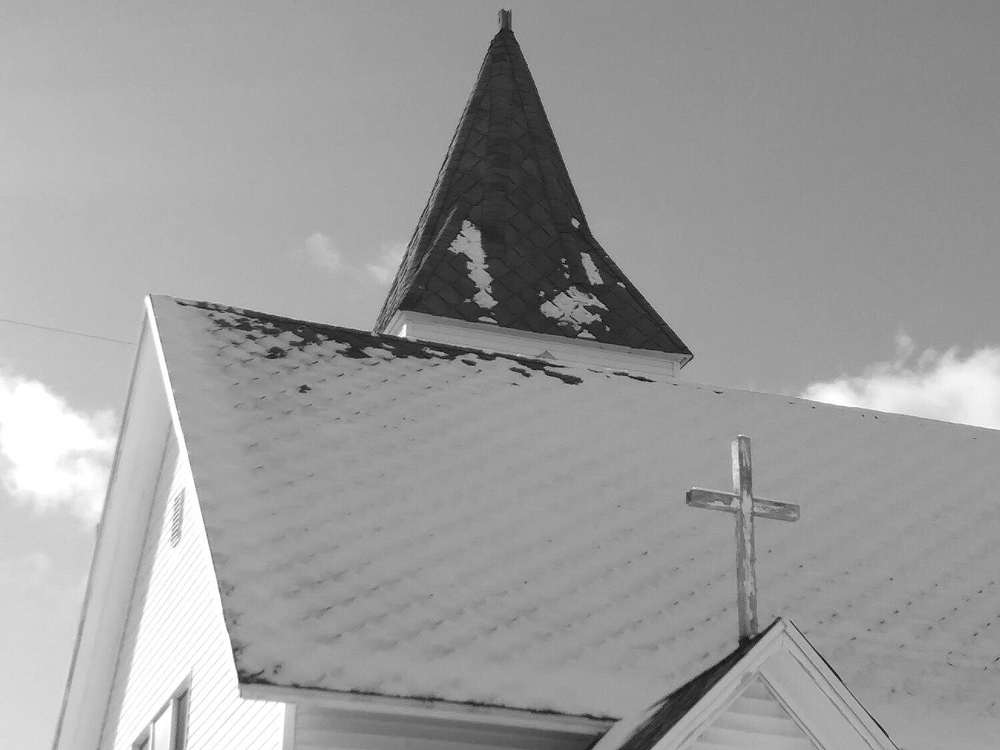

Service info
Doors are open at 9:30am for coffee and connecting with others before service.
Sunday worship
10:00 am, every week
Coffee is on and ready in the basement at 9:30 am for those who want to come early.
Childcare
Not currently offered
Families are welcome to worship together on Sundays.
Community on Sundays
Before and after
Sunday service is a significant part of being together, but not the end all to our gatherings. There are coffee shops and restaurants a block or two away, and Grove Park is a few steps from the door — play areas and a basketball court included.
Click to interact
For the church to grow as Christ's disciples understanding we are called according to His purpose.
That the church would grow in the love we have for Christ and the love we have for one another while fulfilling our call to be the light of Christ within our world.
We believe that the whole universe was created by God. We believe He created mankind in His image to have a deep and loving relationship with. We believe that sin has separated mankind from that relationship and that sin deserves God's judgment and punishment. But instead of His wrath, He desired to show mercy and grace because of His love for humanity.
This love was shown to us when He crushed His one and only Son, Jesus, on the cross for our sin. We believe that those who put their faith in Christ and His sacrifice are forgiven of sin, receive the Holy Spirit, and have eternal life. We know this to be certain because Jesus has risen from the dead conquering sin and death giving everlasting life to all who hope in Him. We believe He is the only way of salvation.
Contact
Where
200 W. Grove St.Up to date info & events
FacebookSupport GCM
General giving
Online
Through Givebutter, with a PayPal option available. Note that the “tip” option can be removed.
In person
Offering box
Place your offering in the box located in the chapel.
By mail
Checks
Made out to Grove Church Midland
200 West Grove Street
Midland, MI 48640